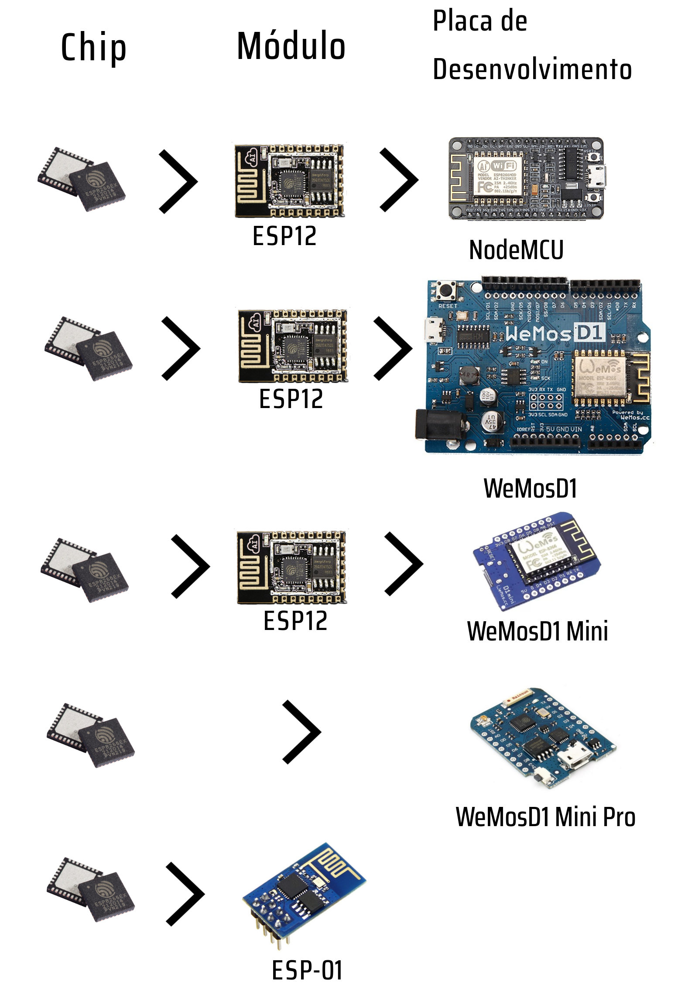
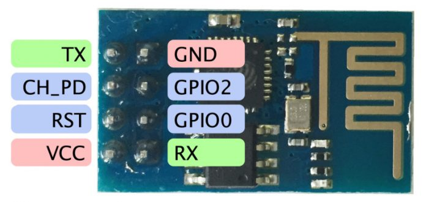
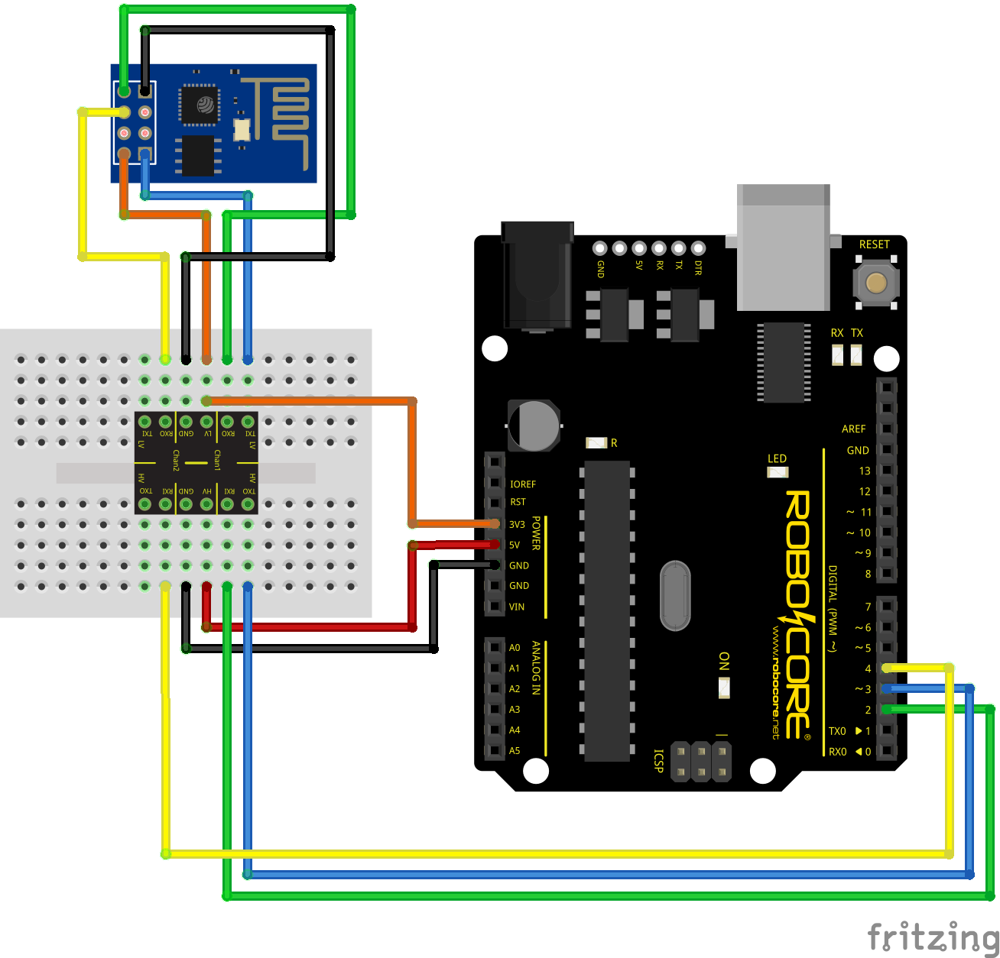
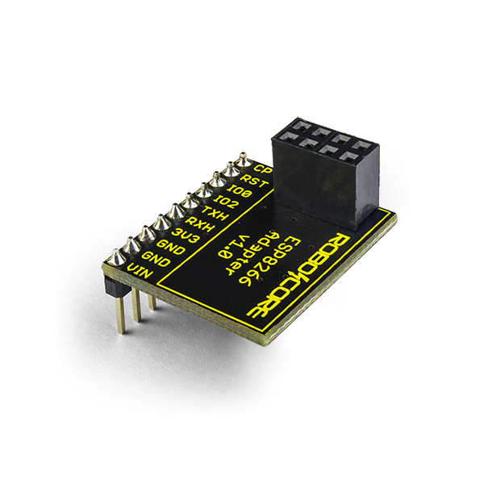
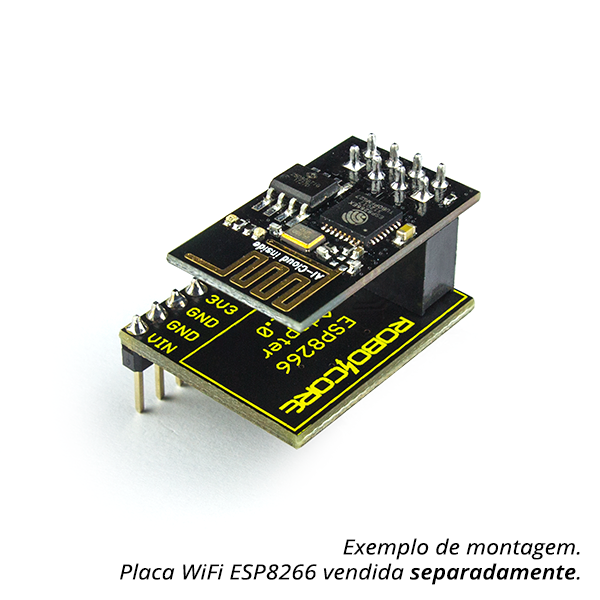
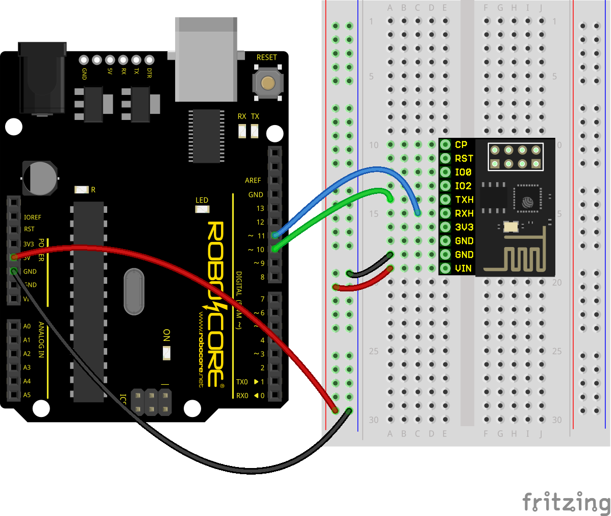

ESP8266 101(Introdução)
Oferecimento
O que é o ESP8266?
É um chip
O ESP8266, revolucionou o mundo maker, por ter baixo custo e a praticidade de incoporar conexão WIFI facilmente em projetos.
O módulo WiFi ESP8266 é um SOC com protocolo TCP/IP integrado que consegue dar a qualquer microcontrolador acesso a sua rede WiFi. Cada módulo ESP8266 vem pré-programado com um comando AT setando seu firmware, significando que você pode simplesmente ligar este módulo ao seu Arduino e ele vai funcionar como qualquer outro shield WiFi funcionaria.
Esse módulo possui um processador na placa poderoso o suficiente para ser capaz de integração com sensores e outras aplicações específicas usando seus GPIOs. O ESP866 suporta APSD para aplicações VOIP e interface com bluetooth pré-existente, ele possui RF auto-calibrável permitindo que ele trabalhe em todas as condições de operação, e não requer nenhuma parte RF externa.
Modelos do ESP8266
Pinagem no ESP-01
ATENÇÃO
O ESP8266 não é capaz de fazer alterações em nível lógico de 5V para 3,3V, e vice-versa. É recomendado o uso de um Conversor de Nível Lógico junto ao módulo.
Por causa da disposição dos seus pinos o ESP-01, não pode ser plugado na protoboard, pois seus pinos causam curto.
Conversor de nível lógico
Adaptador
  Adquira o seuPrimeiros passos
Certifique-se que a velocidade de comunicação do monitor serial está em 9600 bps e a terminação do comando está como "both NL & CR"
Comandos AT
Vamos usar o comando AT+CWLAP
(List Acess Points), para obter uma lista com redes WIFI próximasRecebemos uma mensagem de erro, por padrão o ESP8266 (versão da RoboCore), sai por padrão no modo 2 de funcionamento (Acess Point). Vamos mudar para o modo 1 (estação) com o comando AT+CWMODE=1, e repetir o comando de listagem.
+CWLAP(tipo de criptografia, SSID, Received Signal Strength Indication(RSSI))
Conectando na Rede
#include "SoftwareSerial.h"
SoftwareSerial ESP_Serial(10, 11); // RX, TX
String rede = "SUA-REDE-WIFI-AQUI";
String senha = "SUA-SENHA-AQUI";
String resposta = "";
void setup() {
Serial.begin(9600);
ESP_Serial.begin(9600);
Serial.println("Inicializando...");
delay(1000);
Serial.println("Chamando atencao do modulo com AT...");
sendCommand("AT");
readResponse(1000);
Serial.println("Mudando o modo com CWMODE=1...");
sendCommand("AT+CWMODE=1");
readResponse(1000);
Serial.println("Conectando a rede...");
String CWJAP = "\"AT+CWJAP=\"";
CWJAP += rede;
CWJAP += "\",\"";
CWJAP += senha;
CWJAP += "\"";
sendCommand(CWJAP);
readResponse(10000);
delay(2000); //espera de seguranca
if (resposta.indexOf("OK") == -1) { //procura na resposta se houve OK
Serial.println("Atencao: Nao foi possivel conectar a rede WiFi.");
Serial.println("Verifique se o nome da rede e senha foram preenchidos corretamente no codigo e tente novamente.");
} else {
Serial.println("Sucesso! Conectado a rede WiFi.");
}
}
void loop() {
}
void sendCommand(String cmd) {
ESP_Serial.println(cmd);
}
void readResponse(unsigned int timeout) {
unsigned long timeIn = millis(); //momento que entramos nessa funcao é salvo
resposta = "";
//cada comando AT tem um tempo de resposta diferente...
while (timeIn + timeout > millis()) {
if (ESP_Serial.available()) {
char c = ESP_Serial.read();
resposta += c;
}
}
Serial.println(resposta);
}
Perguntas

newtonjgaliza@gmail.com
github.com/newtongaliza